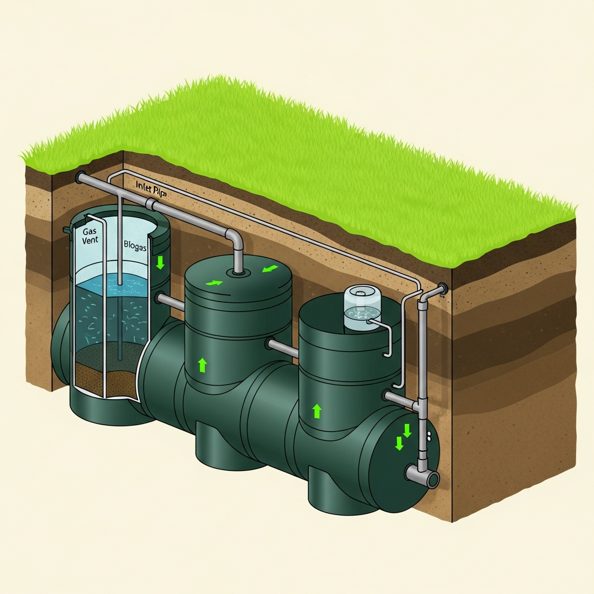

Greenwaste
.
Tech
Tehniskais skats · LV
Kā tas darbojas
Trīs soļi, lai notekūdens
kļūst par
tīru ūdeni.

1
Uztvere
Notekūdens ieplūst sistēmā, bez centralizētā pieslēguma.
2
Biofiltrācija
Dabiski mikroorganismi — bez ķīmijas, bez smakas.
3
Izlaide
Pašregulējoša tīra ūdens atgriešana dārzam.